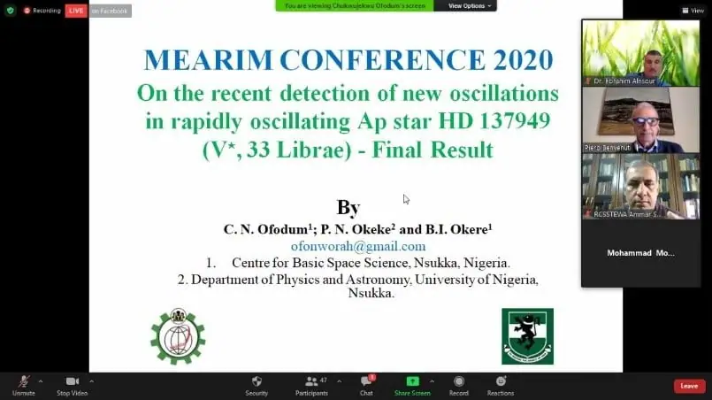

Lectures and events ·
The IAU holds its 5th Middle East and Africa regional meeting, opening its conference on astronomy education and research for the next generations
Translated from the Arabic original. اقرأ النص الأصلي بالعربية
The International Astronomical Union holds its 5th Middle East and Africa regional meeting, opening its conference on astronomy education and research for the next generations
Under the patronage of the President of the Arab Union for Astronomy and Space Sciences, Prof. Hamid Majool Al-Naimiy, and in the presence of the President of the International Astronomical Union, Ewine van Dishoeck, and the Director of the IAU Office of Astronomy for Development, Kevin Govender, the IAU held its 5th Middle East and Africa regional meeting and its conference on astronomy education and research for the next generations. Dr. Eng. Awni Mohammad Khasawneh, Director General of the Regional Centre for Space Science and Technology Education for Western Asia and Secretary General of the Arab Union for Astronomy and Space Sciences, opened the proceedings with a welcome speech; the conference was held on the virtual platform of the Regional Centre and the Arab Union.
IAU President Ewine van Dishoeck gave an opening speech in which she thanked the organisers, represented by Dr. Eng. Awni Mohammad Khasawneh, and stressed the importance of holding the conference in these difficult circumstances for the international community, describing the meeting as a bright spot in international cooperation between Africa and the Middle East. She praised the large and diverse attendance from many countries, with a large number of scientists from around the world, from the International Astronomical Union and from astronomy and space institutions in the Middle East and Africa.
The conference patron, AUASS President Prof. Hamid Majool Al-Naimiy, explained the importance of holding this meeting and conference in such complex international conditions and during the COVID-19 pandemic. After welcoming the distinguished guests and all participants, he praised the scientific papers on the agenda and the outstanding efforts of Dr. Eng. Awni Mohammad Khasawneh, Director General of the Regional Centre and Secretary General of the Arab Union, and the excellent organisation of the conference. He called for continued cooperation between Arab and African countries through international astronomical organisations such as the IAU and regional ones such as the Arab Union for Astronomy and Space Sciences, the Regional Centre for Space Science and Technology Education and the Office of Astronomy for Development in the Arab countries.
For his part, the Director of the IAU Office of Astronomy for Development, Mr. Kevin Govender, thanked the Director General of the Regional Centre, Dr. Eng. Awni Mohammad Khasawneh, for the great efforts he made to hold this meeting after it had been postponed several times because of the pandemic. He said that bringing together so many space and astronomy scientists and researchers from around the world, with so many excellent papers, shows the great interest in developing astronomy and using it for sustainable development and for the benefit of all humanity.
After the opening, participants turned to the papers submitted to the conference: more than sixty papers were discussed in morning and evening sessions over the three days, chaired by distinguished academics from many countries. The conference aims to raise the scientific and professional level of those working in the space and astronomy sector. Its themes covered many specialised topics, such as optical and radio telescopes; stellar structure and galaxies; cosmology and the latest observations; the use of planetarium systems in education; the solar system, near-Earth objects and exoplanets; astronomy, space weather and climate change; multi-messenger tools in astrophysics (electromagnetic waves, cosmic rays, neutrinos and gravitational waves); best practices in public outreach using social media for public engagement in astronomy; astronomy communication to promote peace and intercultural dialogue; Fourier-transform infrared spectroscopy (FTIR) and its applications in space science; and the role of astronomy in the era of the COVID-19 pandemic.
The IAU Middle East and Africa regional meeting is held every two years, alternating between an African country and, two years later, an Arab country. This fifth meeting is a building block in cooperation between the Arab and African countries and helps spread knowledge of astronomy and space science across all sections of society in these countries. The Arab Regional Office of Astronomy for Development and its associated Arabic Language Expertise Centre opened in Amman in 2015. It aims to improve cooperation in space science and technology and to make effective use of human knowledge for the sustainable development of natural resources through education, training and research. The Office of Astronomy for Development in the Arab countries prepares and trains specialised Arab staff in space and astronomy and serves as a centre for training and scientific research for the Arab region. In this short period it has achieved a great deal through effective cooperation with member states, including many agreements with various countries and similar institutions.
The Arab Union for Astronomy and Space Sciences brings together all Arab societies and bodies concerned with astronomy. Since its founding it has sought to organise joint Arab work by holding scientific conferences, symposia and workshops that bring Arab specialists together and help spread astronomical knowledge and exchange information and ideas; to frame research in all areas of space and astronomy science in the Arab countries; to support scientific institutions and societies in the Arab world; and to help amateur and professional Arab astronomers form their own institutions and societies in the Arab countries.

Dr. Eng. Awni Mohammad Khasawneh, Director General of the Regional Centre for Space Science and Technology Education for Western Asia, said that the Regional Centre exists to serve the Arab countries. It was founded in 2012, and its permanent headquarters opened in Amman, capital of the Hashemite Kingdom of Jordan, under royal patronage. It has 14 Arab member states and hopes to include all Arab countries. The centre aims to expand its academic programmes, including master's degrees in cooperation with several Jordanian universities in space and astronomy and their applications: remote sensing and GIS, satellite meteorology, satellite communications, space and astronomy science, and space law, to prepare a cadre of Arab researchers in space science and technology who can supply schools and universities with specialists in these fields.
The conference produced many important recommendations to advance space and astronomy sciences.
At the end of the conference, the President of the Arab Union for Astronomy and Space Sciences sent a letter of thanks and appreciation to Dr. Eng. Awni Mohammad Khasawneh, Director General of the Regional Centre for Space Science and Technology Education for Western Asia and Secretary General of the Arab Union, for the fine efforts made to ensure the conference's success in such circumstances and for its excellent results.